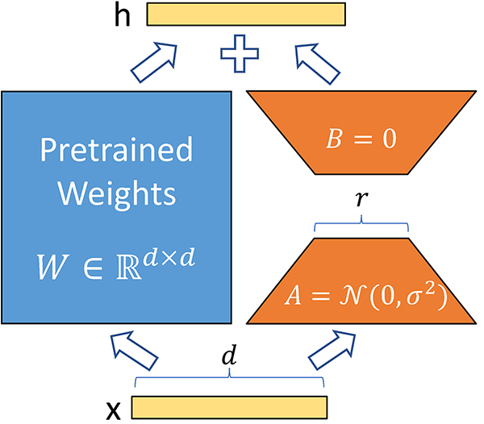
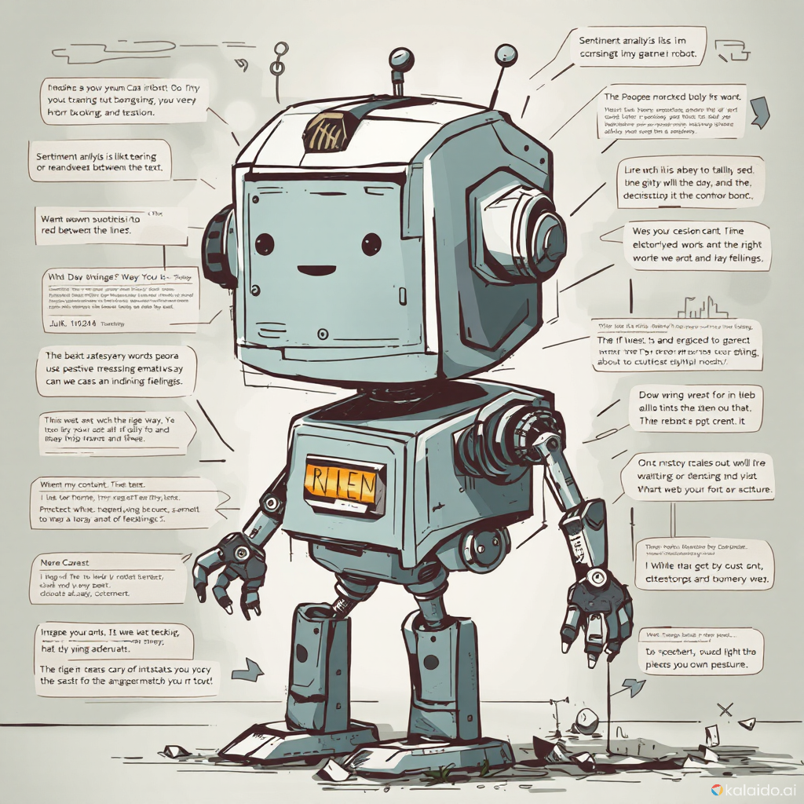
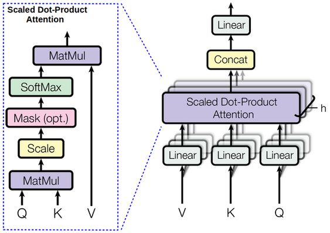

Fine Tuning LLM Model
Fine-tuning the deepseek-r1:1.5b model for medical question answering using RAG, optimized with quantization and PEFT (LoRA) for enhanced efficiency and performance.
View ProjectFine-tuning the deepseek-r1:1.5b model for medical question answering using RAG, optimized with quantization and PEFT (LoRA) for enhanced efficiency and performance.
View Project
Osbo is a multi-agent personal AI assistant, powered by CrewAI. It inspired by Norman Osborn from the Spider-Man universe. It handles tasks such as meeting scheduling, email management, to-do list organization, contact management, and acts as a chat model, offering a seamless and efficient experience.
View ProjectIt is the project where I build transformer models from scratch to learn how they work. I break down each part to understand how they fit together. The goal is to improve my skills in using transformers for real-world tasks.
View Project
Built a language translation tool from scratch using attention models, concepts included: Attention models, Transformers, NLP, and related techniques. The project involved designing and training a system for semi-accurate and context-aware translations.
View Project
Developed a Semantic Search Engine that uses AI to learn from and search FAQs based on customer queries, concept included: NLP, Python. The project involved developing a system that improves search accuracy by understanding and responding to user questions effectively.
View Project